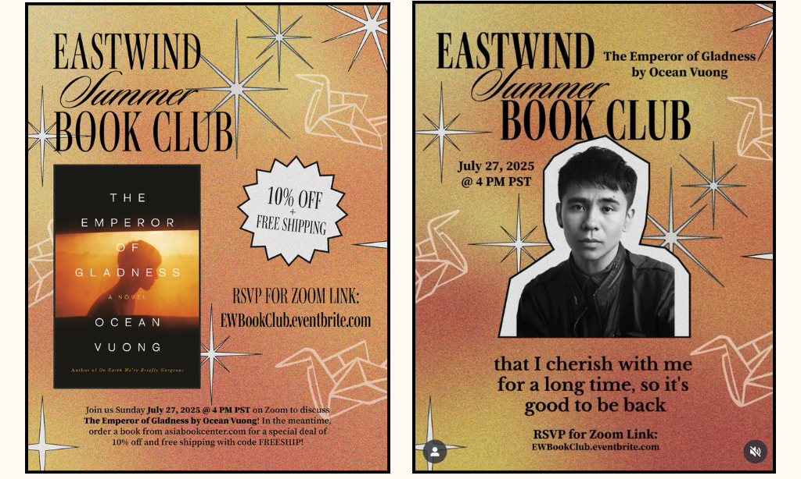
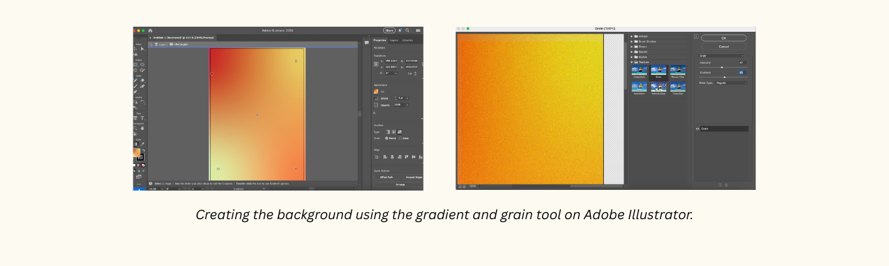
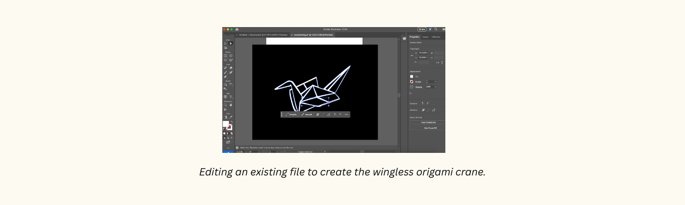
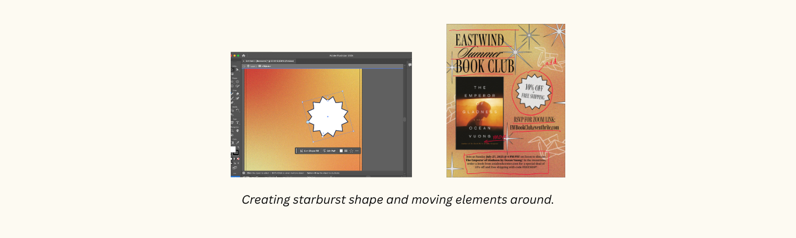

Date: June 4 to June 22, 2025
Role: Graphic Designer
View Project Here
I was tasked with organizing Eastwind Books’ Summer Book Club in 2025 which we chose to highlight Ocean Vuong’s new book The Emperor of Gladness. As a lover of books, I really wanted to translate the feeling and the words of Vuong’s story into a graphic that also helped promote the event and the book sale.
On Adobe Illustrator, I pasted a photo of the book and filled the background with a gradient that featured oranges, yellows, and reds from the cover of the book. I really like the visual when the photos match the graphic so they don’t feel like two separate elements from each other.
I added a grain effect on the background to evoke the nostalgia of the early 2000s which is when the novel takes place. My font choice is based on the current trends in design right now, which features a more curly and fancy font. I really wanted to incorporate this symbol of a crane with no wings from the book because it was so present in the novel. So, I utilized Adobe’s stock image collection to find a picture of an origami crane. I downloaded it as an Illustrator compatible file and edited it using strokes, lines, and anchor point manipulation to remove the wings.
I probably keep repeating this idea throughout my projects but I love using design to uplift my community and highlight these stories about people who are so brave but rarely receive the spotlight on their stories. I also wanted to highlight the book sale on Eastwind Books’ website, so I created a starburst element that looked like similar ones in old coupon ads. I decided to move the image of the book to the left side so that I could fit the sale element, which gave me more space to incorporate the description and date of the event. Another reason why I love design is that it combines both logic and creativity, it makes it so that these two seemingly opposing elements are actually interwoven and necessary for its existence.
This design met our original goal: it increased the sales of the book on Eastwind Books’ website and also attracted over 20 registrations in less than a day.
After the initial post, I needed to create another post to promote the event and also highlight Ocean Vuong’s past experience performing his poetry at Eastwind Books. I changed up the design a little bit by moving the title to expand across the graphic. This is to complement the new layout of Vuong’s photo at the center. I felt that it would help draw the viewers attention to the center of the graphic compared to the first design that focused more on balancing a lot of information.
I added this graphic as a background and synced the audio from Vuong’s episode of the podcast Berkeley Talks. Using a video format increased engagement and reach to audiences outside of Eastwind Books' social media following. Vuong also liked our post which is so cool and very much made my fangirl heart happy!
Visit Eastwind Books to browse its prolific collection of AAPI and Ethnic Studies books and sign up for our newsletter to stay up to date with events around the Bay Area!